实体机制
实体机制
本栏目共 29 篇技术性图文。生物生成与空间检测、寻路、袭击与村庄、刷怪塔与实体评估。点击任意一篇即可阅读全文，配图均已本地化保存。

MCBE 生成机制讲解（1.16.40）

MCBE 生物生成机制经验总结

MCBE 生物寻路的一些机制
MCBE 主世界常规怪物的空间检测机制
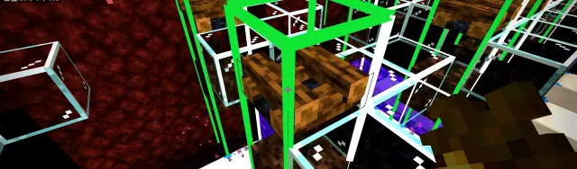
MCBE 结构生成与自然生成的空气检测范围差别
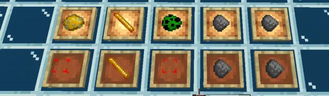
MCBE 部分掉落物及抢夺计算相关机制

静态闪门猪人塔核心原理详解

袭击机制详解
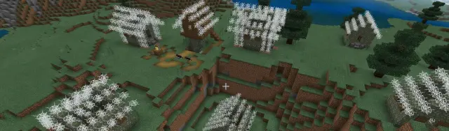
一份比较详细的 MCBE 村庄机制解析
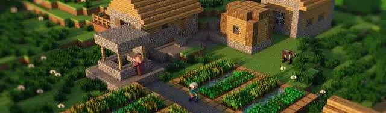
村庄机制limx2
MCBE 袭击（Raid）事件生成区域解析
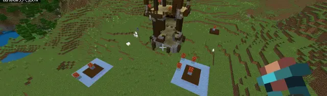
MCBE 1.21.10.24哨塔子结构及hsa介绍
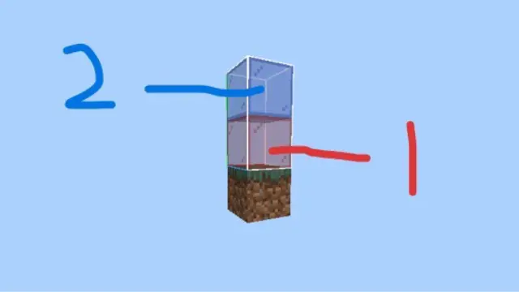
MCBE 劫掠生成类方块检测机制
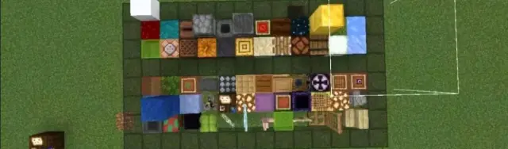
MCBE 恼鬼与尖牙的生成机制
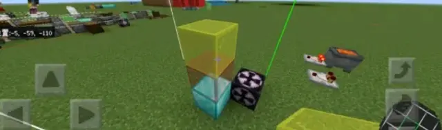
MCBE 守卫者生成的空间检测机制
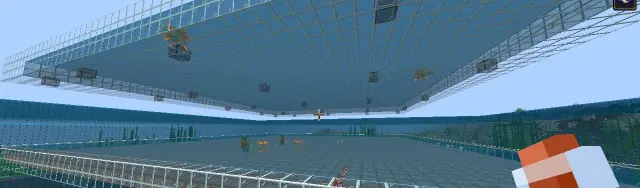
MCBE 守卫者的两种生成机制
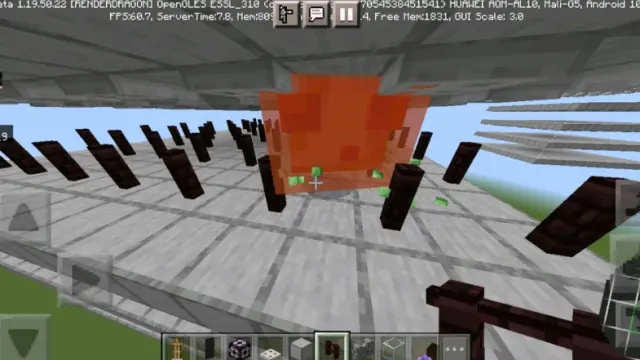
MCBE 岩浆怪和史莱姆的空间检测机制1.19.60-
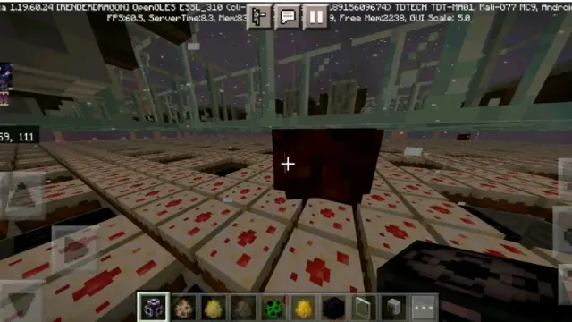
MCBE 岩浆怪和史莱姆的空间检测机制1.19.60+
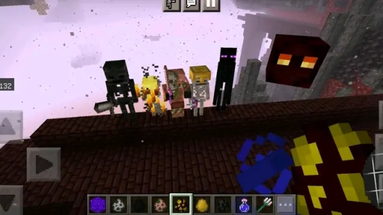
MCBE 堡垒刷怪塔全解

MCBE 抖矿车的目的地
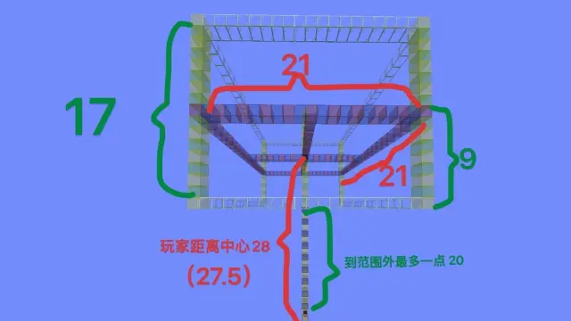
MCBE 幻翼相关机制的再探索与农场架构
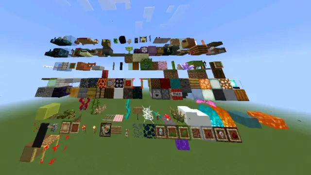
MCBE 嘎枝生成机制与相关探索
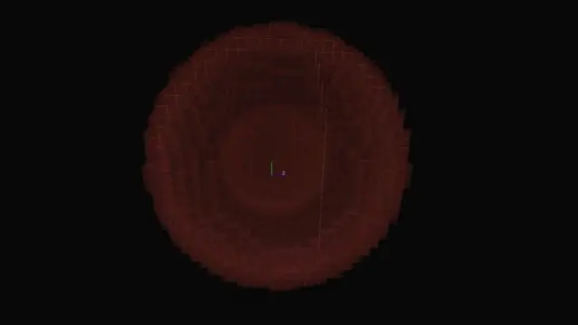
MCBE 实体评估---发光鱿鱼篇
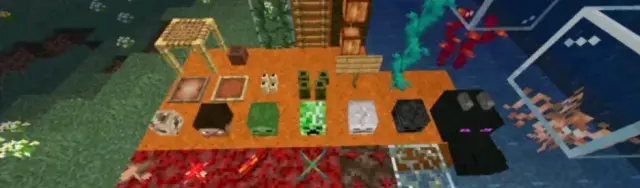
MCBE 关于伪空气类方块的评估
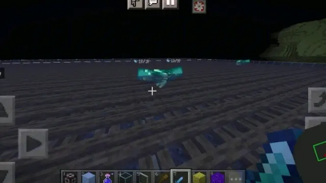
MCBE 修改之后的篝火性质
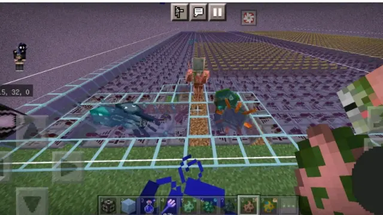
MCBE 部分生物的特殊方块性质判定
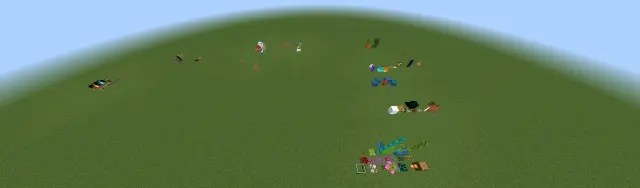
MCBE 完全不阻碍与部分不阻碍方块汇总及空气类方块简述
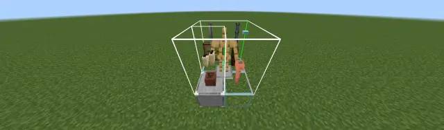
MCBE 限制类方块原理与三种方块分类方式
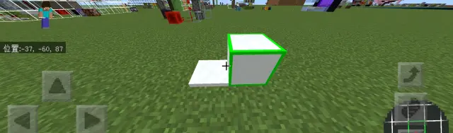
MCBE 两种含雪方块部分性质